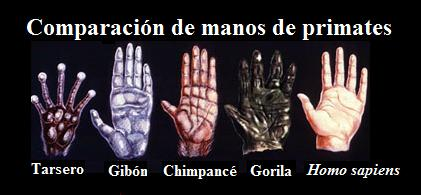
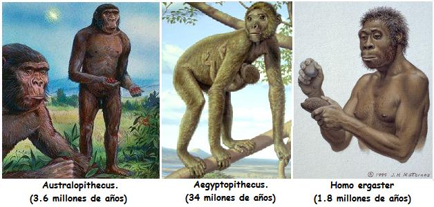
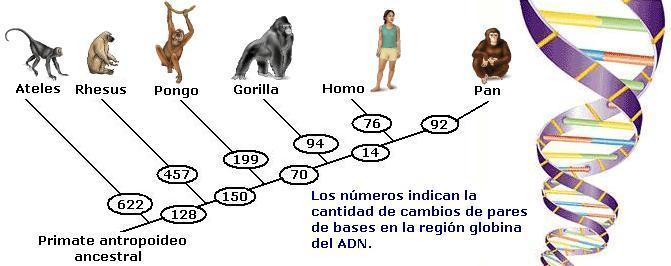

Desarrolla el siguiente taller y aprende sobre las relaciones evolutivas de los humanos con los otros primates. En esta sección podrás encontrar preguntas de respuesta múltiple. La mayoría de los puntos buscan que interpretes gráficas, imágenes o texto. Las preguntas no son de tipo memorístico aunque es necesario manejar un vocabulario de contenido básico.

-
Según el cladograma 1, la especie viva más cercana al hombre es:
El orangután.
El chimpancé.
El gorila.
Los gibones.
-
Según el cladograma, se puede afirmar que los homínidos que presentan un antepasado común más cercano en el tiempo son
Gorilas y Humanos.
Humanos y Orangutanes.
Humanos y Chimpancés.
Mono araña y Humanos.
-
El cladograma muestra el proceso evolutivo que dio como resultado la formación de siete especies de primates. De acuerdo con este se puede decir que evolutivamente el hombre:
Desciende del chimpancé.
Está más relacionado con los chimpancés que con cualquier otro mamífero.
Está más relacionado con el orangután que con el gorila.
Tiene un ancestro común más reciente con los gibones que con los gorilas.

-
Las características que se mencionan junto a los puntos del cladograma son aquellas características que son comunes a las especies que evolucionaron a partir de ese momento. Según lo anterior son ciertas las siguientes afirmaciones EXCEPTO:
El gorila y el mandril poseen 2 premolares
Los lémures y los monos arañas poseen en su cráneo un cierre postorbital.
Los tarseros y mandriles poseen el labio superior “entero” , sin rinario.
El mandril y el loris poseen pulgares oponibles.
-
Teniendo en cuenta la información proporcionada por el cladograma el enunciado FALSO es
Los tarseros son primates haplorrinos 2.
Los platirrinos NO pertenecen al grupo de los antropoideos.
Los lémures están más emparentados con los lorises que con los simios.
Los grandes simios están más emparentados con los monos de América (platirrinos) que con los tarseros.
-
Según el cladograma se puede afirmar correctamente que
Los tarseros son primates que poseen un tubo auditivo óseo.
Todos los haplorrinos tienen el labio superior entero, es decir no tienen rinario.
Los lémures solo poseen dos premolares.
El gorila es un antropoideo del grupo de los catarrinos (o primates del Nuevo Mundo).
-
Cuando los biólogos dicen que humanos y chimpancés han evolucionado a partir de una antepasado común, ellos están diciendo que han existido cambios heredables en dos poblaciones aisladas, una vez que ellas se han separado. Esto significa que:
Cuando dos poblaciones quedan aisladas, evoluciona cada una de ellas por separado.
Los seres humanos descendemos de los chimpancés actuales.
Un chimpancé tuvo una mutación que transmitió a su hijo y éste nació siendo humano.
No existe conexión entre la genética y la evolución.
-
Todos los primates compartimos una serie de rasgos que nos son exclusivos. Es así como nuestro dedo pulgar es oponible lo que permite cerrar el puño y así poder coger las ramas, bien para colgarnos, para trepar o, simplemente, para sostenernos en ellas. Esta disposición del pulgar, está en la base de la capacidad de unir las pulpas de los cincos dedos, que faculta la prensión de precisión y la manipulación de objetos.
La siguiente gráfica muestra las manos de varios primates. Según esta se puede concluir que
Las manos de los gibones, chimpancés, gorilas y humanos son iguales.
El parecido de las manos de los grandes simios y el hombre NO se debe al hecho que todos ellos comparten un ancestro común.
La distancia entre el pulgar y el dedo índice es mayor en los humanos que en el chimpancé.
La distancia entre el pulgar y el dedo índice es mayor en el chimpancé que en el humano.
-
El hecho que los primates tengamos el pulgar oponible constituye
Una adaptación para un tipo especial de vida en los árboles.
Una característica planeada anticipadamente para que los humanos pudieran manipular herramientas.
Una adaptación a la vida en el desierto.
Una adaptación a ambientes congelados.
Una característica de los simios y humanos es que tenemos los ojos frontalizados, es decir, ambos en la parte anterior de la cara. Esto da como resultado, que a nuestro cerebro llegan dos imágenes muy similares desde cada ojo. Esta situación limita el campo total de visión, que es mayor en animales que tienen los ojos a los lados de la cara, sin embargo, esta disposición permite que veamos en tres dimensiones, por lo que podemos estimar con gran precisión distancias.
Reflexionando sobre la utilidad que la visión estereoscópica constituyó para los primeros primates podemos afirmar que esta característica les permitió
Calcular las distancias para capturar las presas que cazaban
Calcular las distancias para poder saltar de una rama a otra.
Calcular las distancias a recorrer en el día.
Tener un campo de visión mayor.

-
El proceso evolutivo no es un diseñador impecable, al contrario este construye teniendo como base lo que ya había antes. El biólogo francés François Jacob refiriéndose a este aspecto decía “la evolución es chapucera”; mientras que el biólogo Richard Dawkins se refería a la selección natural, uno de los mecanismos evolutivos, como un relojero ciego. La evolución de las características humanas no han sido exentas de esta situación.
Bien se afirma que si un caballo tuviese un cerebro tan grande y desarrollado como el de los humanos en nada o muy poco transformaría su ambiente ya que carece de una mano con un pulgar oponible. El pulgar oponible apareció en un grupo de mamíferos arborícolas permitiendo su desplazamiento entre las ramas, pero sin proponérselo permitiría posteriormente a los simios elaborar herramientas para explotar su medio. Otro ingrediente que permitió a los humanos ser primates únicos es la locomoción bípeda. La marcha bípeda apareció en un momento en que las zonas arboladas daban más espacio a zonas abiertas y era más beneficioso y práctico para desplazarse en este medio. De igual manera que en el caso de la evolución del pulgar oponible, sin que hubiese nada previsto de antemano, la locomoción bípeda abrió la posibilidad del aumento en tamaño de nuestra masa encefálica. Estas tres características mencionadas contribuyeron a hacer del ser humano un primate excepcional.
Observa las ilustraciones de los siguientes primates fósiles e indica en que orden aparecieron algunas características humanas:
Visión binocular - Postura bípeda - cerebros grandes (más de 1000 cc).
Cerebros grandes (más de 1000 cc) - Postura bípeda - perdida de gran parte del pelo corporal.
Postura bípeda - perdida de gran parte del vello corporal - pulgar oponible a los otros dedos.
Pulgar oponible a los otros dedos - Postura bípeda - cerebros grandes (más de 1000 cc).
-
Al realizar una comparación de los cromosomas de los humanos y los chimpancés se nota que los primeros tienen 23 pares y los segundos 24 pares. Los científicos creen que en algún momento en el linaje que condujo a los seres humanos el número de cromosomas se redujo en un par.

Según la anterior gráfica se puede concluir que tal reducción se debió a:
La reducción de un brazo del cromosoma Y de los chimpancés.
La adición de dos cromosomas de los chimpancés formando el cromosoma 2 de los humanos.
Todas las anteriores.
Ninguna de las anteriores.
-
Los biólogos han buscado en los genes datos para validar el parentesco de los humanos con los otros primates. Al analizar los genes que guardan información para la “fabricación” de la proteína sanguínea de la hemoglobina se halló el siguiente resultado:
Según la gráfica es válido afirmar que:
Los datos moleculares indican que el pariente vivo más cercano del hombre es el gorila.
Los monos araña (Ateles) no sufrieron cambios en su secuencia de genes para la globina desde que su linaje se separo del linaje de monos del Viejo Mundo.
Los datos moleculares indican que el pariente vivo más cercano del hombre es el chimpancé.
Desde que el linaje del humano y el chimpancé se separaron no han ocurrido cambios es su secuencia de genes para la globina.
Notas
- 1
-
Un cladograma es un diagrama que permite representar el parentesco evolutivo entre las especies. Si deseas saber más sobre el uso e interpretación de los cladogramas en biología te invitamos a leer “Cladogramas: Ilustrando el parentesco evolutivo”
- 2
-
Los haplorrinos son un grupo de primates que poseen su labio superior sin ninguna división en el medio y que no tienen su nariz húmeda (como lo tienen los perros). Para conocer más sobre la clasificación de los primates lo invitamos a leer el texto “El hombre en el grupo de los primates” publicado en Sindioses.
Volver a la sección Ciencias de los orígenes
Comentarios
Comments powered by Disqus